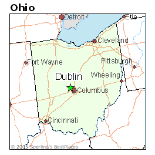

My name is Benjamin Bowser and here are some images about me:
This is where I attend college, at Miami University.

This map shows where I am from, Dublin, Ohio.
The city I was born in, Hartford, Connnecticut.
I am a senior at Miami University graduating in Spring 2019. I just completed CSE383, CSE212, CSE486, CSE449, and CSE381 this past semester. This upcoming spring I am taking CSE449, CSE470E, CSE310D, and CSE451. I am currently searching for employment after graduating.